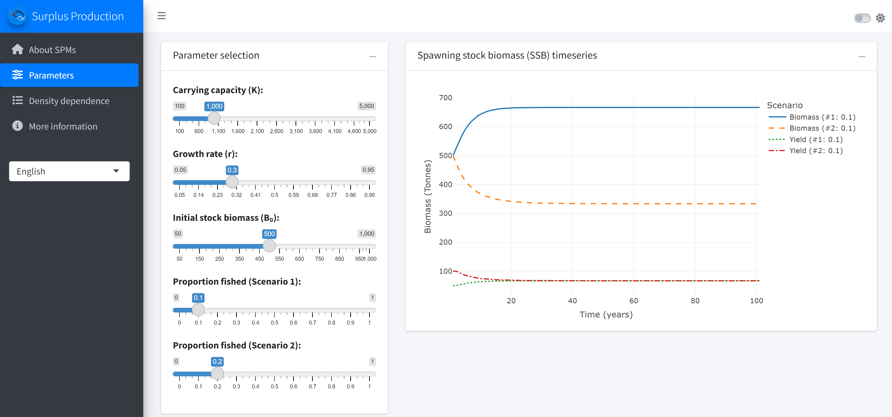
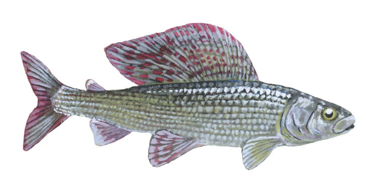

Surplus production models
Introduction
Surplus production models are widely used in assessments of data limited fisheries stocks. These models are based on the assumption that stock abundance is largely determined by fishing, population regeneration or growth rate (r) and population carrying capacity (K), which represents the unfished biomass level. If we knew the r and K exactly, and if we had good data on catches through time, we could estimate population abundance pretty well. However, since r and K are not known, we use time series of catches and population abundance index (e.g. standardised catch per unit effort data) to estimate most likely values of r and K, assess population status and make future projections. This means that in order to apply surplus production models to our stocks we need information about:
- time series of catches,
- time series of standardised CPUE or other measure of population abundance index,
- some preliminary guesses about r and K and initial population depletion level, or how close to the carrying capacity our population was at the start of our time series.
Also, because surplus production models estimate model parameters from available time series, they work best if the time series has sufficient contrast in catches and population abundance. If catches and CPUE remained relatively stable through time, then parameter and population status estimates will have large uncertainty ranges.
The main parameter, determining population resilience to fishing is the population regeneration rate r. We usually do not have r for our species and population, but we can look up estimates in the FishBase life-history tool section. Or we can use these generic estimates which suggest r of 0.6-1.5 for high resilience species (Von Bertalanffy growth rate K>0.3, maturation age < 1, high fecundity) and r of 0.2-1 for medium resilience species.

To learn more about the principles of surplus production models, we recommend this excellent and freely available book by Malcolm Haddon “Using R for Modelling and Quantitative Methods in Fisheries”.
Model
Before applying surplus production models to our stocks it is important to understand how they work and what assumptions they make. To help you explore these assumptions and outcomes, we have developed this user friendly tool which you can access here.

Application of the model
Surplus production models have been applied to a wide range of populations and usually perform better than even simpler models that are based only on catch data. For a recent overview of surplus production model applications, please see this publication. This review also explains that when data is limited, simple surplus production models can perform better than more complex models with many parameters, which cannot be effectively estimated.
However, it is important to remember that simple models must make simplifying assumptions. The main assumptions to keep in mind are:
Population abundance is mostly controlled by fishing and not other environmental parameters or species interactions. If this is not the case we need other types of models - perhaps models relating stock abundance to prey biomass, temperature, currents or other factors.
All spawning stock biomass is equal. We do not care about age or size structure and assume that 1kg of mature 5 year old fish contributes the same amount of production to the stock as 1kg of mature 10 year fish.
Population parameters, such as growth, natural mortality, carrying capacity and regeneration rate are fixed through time and space. Although this is usually not the case, most datasets do not have enough information to estimate changes in these parameters through time anyway.
